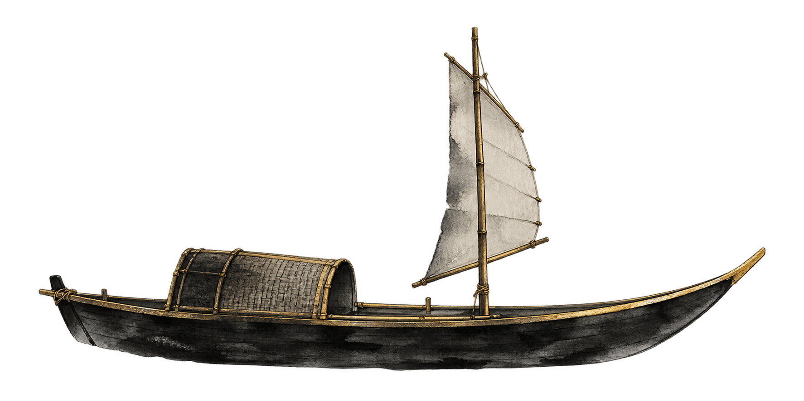

第一幕 / 启舟
二十
舟行至此，恰逢二十。
写给今天的你

向下 · 继续此卷十九的夜 / 二十的晨月色为序，山水作笺
第二幕 / 她
关于你，
我好像总有很多话想说。
有些光，不需要很亮。
只要出现，就能照见一整个夜晚。
温柔认真偶尔倔强明亮细腻偶尔发呆可爱
这些细碎的模样，
拼成了现在的你。
第三幕 / 二十
不是长大的终点。
是自由的开篇。
十九岁的风，送你到这里。
二十岁的月光，会陪你去更远的地方。
新章
第四幕 / 二十笺
把想说的话，
折成二十笺。
每一笺，都是一份小小的偏爱。轻触展开
山水有尽，喜欢无穷。
第五幕 / 愿
今夜的月亮，
替你收下所有愿望。
点亮一份祝愿，让它随舟远行。
四份心愿，等一阵温柔的风。
第六幕 / 相逢
世界很大，山水很长。
而你刚好，
来到我的故事里。
不必给相逢一个盛大的理由。
只是从此，月亮更好看了一点。
连普通的日子，也值得被记住。
幸好，是你。
第七幕 / 给你
有些话，
想慢慢写给你。
给二十岁的你启信
亲爱的你：
写到这里，月亮还在，舟也还在往前走。我想，二十岁大概也像这样：有一点未知，有一点期待，还有许多尚未发生的美好。
愿你不用急着懂得所有事情，不用为了长大，藏起自己的天真。可以认真，也可以偶尔偷懒；可以坚定，也可以暂时迷路。你有很多很多时间，慢慢成为喜欢的自己。
愿你走过的路有花，回头的时候有灯。愿每一次勇敢都得到回应，每一份温柔都有人珍惜。就算偶尔遇见雨，也记得：你值得晴天，值得拥抱，值得所有不需要证明的偏爱。
今天，先把世界放在一边。好好许愿，好好快乐，好好收下这句：
二十岁，生日快乐。
往后的山水很长。
我想，继续陪你看。
一个很喜欢你的人
写于你二十岁的这一页
终幕 / 天明
舟行未止，
故事未完。
Happy 20th Birthday.
To be continued.
愿你的二十岁，有月光，也有晨光。
你怎么还在往下翻……
真的很喜欢你。
这句话，只留给看到这里的你。